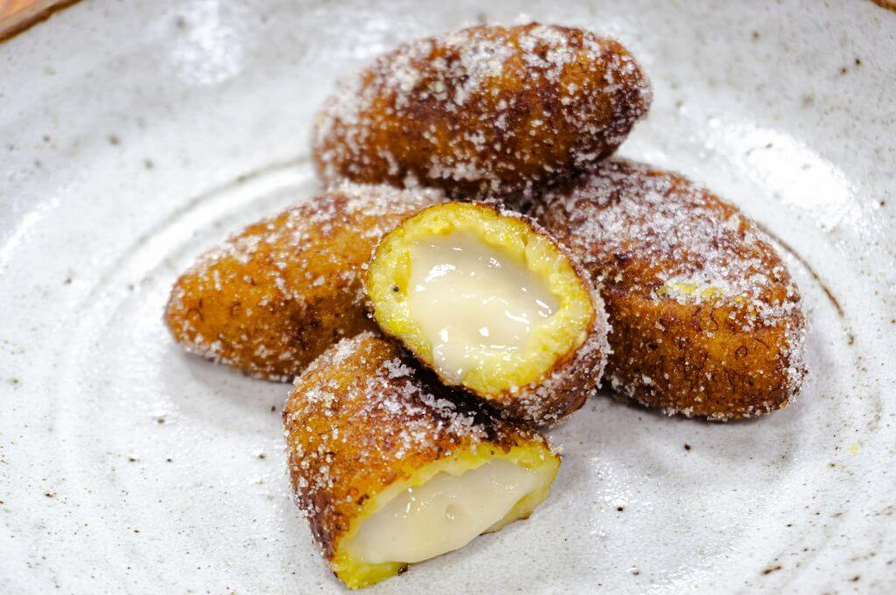

Empanadas

Description
One of my favorite memories of my childhood is of the rare occasions in which the seller of plantain empanadas passed by my house. She almost never came by our house because she usually ran out halfway. They were so delicious and irresistible so we were the unlucky ones. It is very difficult to find Salvadoran empanadas in the USA. That is why I will share with you this recipe that I came accross on the internet.
Ingredients
To boil the plantain
- 2 Big and ripe plantains (ripe enough that they have black spots)
- 4 cups Water (to boil them)
- 3 Cinnamon sticks (or as many as you like)
- 2 tbsp Sugar (to boil the plantains)
For the milk filling
- 3/4 cups Milk
- 1/2 tsp Vanilla
- 1 1/2 tbsp Sugar (or sugar to taste)
- 3 tbsp Cornstarch
Steps
- Bring a pot over high heat with 4 cups of water to a boil.
- Remove the tips of the bananas. Cut the bananas into pieces of about 3 or 4 centimeters (1 1/2 inches). DO NOT remove the peel.
- When the water is boiling, add the two bananas cut into small pieces, the cinnamon and the 2 tablespoons of sugar. Let the banana boil until the open ends have expanded from the peel.
- While the banana is cooking, prepare the milk filling: Put a pot over medium heat and add 1/2 cup of milk, the vanilla and sugar and bring to a boil.
- Dissolve the cornstarch in the remaining 1/4 cup of milk and when the milk is boiling add the dissolved cornstarch little by little while stirring with a spoon (so that the milk does not stick to the bottom of the pot)
- Keep stirring the milk constantly to avoid burning the milk. In the end you will obtain a creamy paste. Remove it from the heat and let it cool in a separate container (put it in the refrigerator if you like).
- At this point the banana should be done . Remove the peel and also remove the row of seeds from the center of the banana.
- With a fork or potato masher, mash the banana into a smooth, manageable paste.
- When the banana is no longer so hot that you can grab it with your hand and not burn, let's make the empanadas: take a portion of the banana dough (the size you want, but something like a golf ball) and shape it like a tortilla.
- Then put the milk in the center and close it very well. Try not to leave any space without covering the milk so that the oil does not get too angry and burns you :). Put some of the mashed plantain in the spaces where you see white (milk) to cover them.
- Place the empanadas in a saucepan with oil over medium heat. It is preferable that there is enough oil to cover them completely. But, if you don't have enough, let the oil reach halfway. When they look golden brown, turn them over. When they are golden brown, place them on a paper towel to remove the excess oil.
- If you wish, you can sprinkle sugar on them before serving.